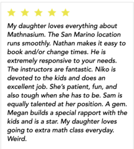
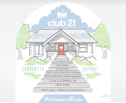
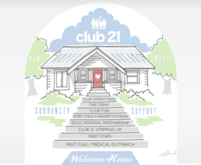

Megan Nakajima
My name is Megan Nakajima and I am a first year student at the University of California, Riverside. I am currently majoring in the School of Business, studying Actuarial Science.
This is my second year being a math instructor at a math learning center called Mathnasium. There, I work with students, ages 4-18, in understanding numbers. Unlike tutoring centers, Mathnasium does not focus on helping the students with their homework, assuming that the students do not have a strong fundamental understanding of the necessary mathematical concepts. Instead, each student is evaluated in order for us to design a personalized binder for them. In their binder, are pages of several concepts that the student failed to test well in. These concepts may be years behind their current grade level. Working on these pages will help the student strengthen their fundamental skills in order to perform better in the more advanced topics at school. As an instructor, I work with four students each hour, guiding them through their binder work, while keeping them engaged. Personally, I create the strongest bonds with the female students ages four to ten. The parents of several students have reached out to me, asking for me to work with their child in other subjects outside of Mathnasium. This shows the importance of forming relationships with each student when working with them. Ever since, I have been working with students as a separate part-time job, tutoring them in reading and writing.
Between years of education, my ongoing time at Mathnasium, and my work as a private tutor, I have strengthened several skills within my personal being. Perhaps most notably, my communication skills are stronger than ever. I do believe that in every career, communication is one of the most important skills whether it be face-to-face communication or electronic. My different experiences have allowed for me to grow in my communication with individuals of all ages. Another prominent trait is organization. Between organizing lesson plans for private tutoring or keeping the work of over one hundred students organized at Mathnasium, I have become extremely capable of organizing almost anything in an efficient and timely manner. While these skills are important, I also think that the fashion in which they are done is underappreciated. I pride myself in my enthusiastic manner and optimistic outlook. Especially when working in a chaotic environment, it is easy for stress to get the better of you. In my many months at Mathnasium, I think I have come close to perfecting my calm mindset when entering a state of work. There is nothing more anxiety-inducing than a workplace filled with energetic children, but that environment alone has trained my mind how to handle unexpected changes in a calm and organized fashion.
Experience
Math Instructor
• Work with students ages 4-18
• Organize personalized work for each student
• Communicate progress with parents
Private Tutor
• Organize personalized lesson plans weekly
• Work alongside individual students
Volunteer
• Took lessons to learn about Down Syndrome
• Socialize with individuals of all ages with Down Sydrome
• Communicate with families of individuals with Down Syndrome
Education
UC Riverside
Portfolio



